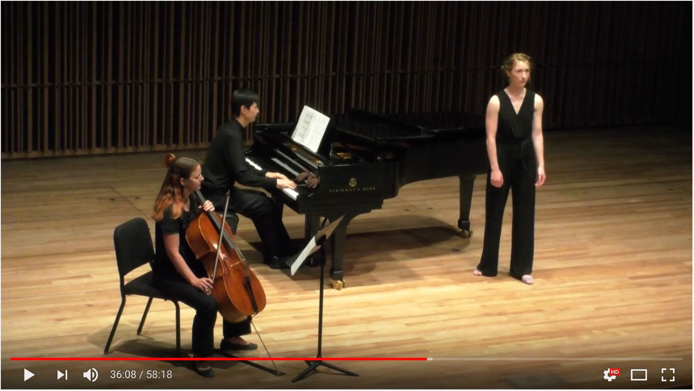
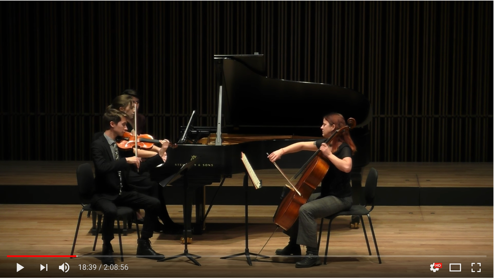
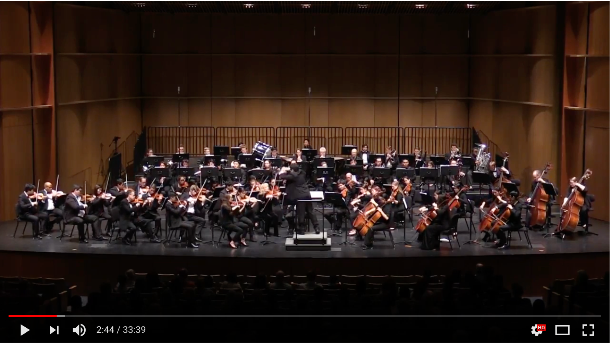

music
Lisa K. Johnson
5/25/2018
In my free time, I enjoy playing the cello. I have a minor in music (2002) from Eckerd College in St. Petersburg, FL, where I studied with Mussie Eidelman. I have also studied with Susan Lamb Cook (UC Davis), Dr. Judy Shiffers (Silver Spring, MD), and Dr. Richard Thomas (UNC Wilmington).
Recent projects:
Ashley West, mezzo-soprano
Lisa Johnson, cello
Jeremiah Trujillo, piano Leonard Bernstein: “Dream With Me”

Trio in B-flat Major, op. 97 (“Archduke”) by Ludwig van Beethoven (1770−1827)
Calvin Proctor, violin
Lisa Johnson, cello
Alessandra Knitter, piano
Coached by Michael Orland

Orchestras
UCD Symphony Orchestra
2017-2018
Elgar, “Enigma Variations”

UCD Barque Ensemble
2015
NYU Community Orchestra, New York
2014-2015
Vero Beach Chamber Orchestra, Florida
2010-2013
2012-2013, Pricipal

Melbourne Community Orchestra, Florida
2007-2009
Wilmington Symphony, North Carolina
2002-2004
Tampa Bay Symphony, Florida
1998-2002
National Youth Orchestra, Carnegie Hall, New York
Johannes Brahms’ Symphony No. 1, conducted by Lukas Foss
January 20, 1998
Washington Pro Musica Ensembles, Washington D.C. Metro area
1997-1998
Montgomery County Youth Orchestras, Maryland
1993-1998
Non-classical Projects and Collaborations:
Beth Chesser, University of Brighton, UK
recordings for film ‘ENSO’
2014
The Band in Heaven, studio recordings for the album ‘Caught in a Summer Swell’
2012
New Gravity
2008-2009
Featured in Brevard Live, November 2008, 17(8)
Brian Lotter
Live and home recordings
2007
Eckerd College World Music Improv Ensemble
2000-2002
When All Else Fails
2000
Copyright © 2018 Lisa K. Johnson